Primeira Morte
First Kill (prt: A Primeira Vítima; bra: Primeira Morte) é uma série de drama adolescente sobrenatural americana criada por Victoria Schwab que estreou em 10 de junho de 2022 na Netflix. A série é baseada no conto de mesmo nome de Schwab.
Sinopse
InicioÉ hora da vampira adolescente Juliette fazer sua primeira morte para que ela possa tomar seu lugar entre sua poderosa família de vampiros Legado, descendentes diretos matrilineares de Lilith que escolheram ser mordidas pela Serpente no Jardim do Éden. Juliette mira romanticamente em uma nova garota na cidade chamada Calliope, mas fica surpresa quando Calliope – que compartilha seus sentimentos românticos – prova ser uma caçadora de monstros da Guilda dos Guardiões. Ambas acham que a outra não será tão fácil de matar e, infelizmente, muito fácil de se apaixonar.
Lista de episódios de Primeira Morte
Inicio| Temporada | Episódios | Estreia da temporada |
|---|---|---|
| 1 | 8 | 10 de junho de 2022 |
1ª temporada
InicioPrimeira Morte" apresenta Juliet (Sarah Catherine Hook), uma jovem vampira, e Calliope (Imani Lewis), uma caçadora de monstros de uma linhagem antiga. Ambas estão em busca de realizar sua "primeira morte". Baseada no conto homônimo de V.E. Schwab, a série envolve dilemas familiares, mistérios, e uma rica mitologia.
Pontos positivos incluem a diversidade de personagens, representação LGBTQIA+, protagonismo feminino, e uma trilha sonora maravilhosa, destacando-se pela abertura nostálgica. No entanto, o roteiro oscila entre tons "trasheira" e tenso, às vezes prejudicando a coesão. As atuações, especialmente entre os jovens atores, variam, enquanto as matriarcas Margot (Elizabeth Mitchell) e Talia (Aubin Wise) se destacam.
Os embates entre Margot e Talia são cativantes, mas a coerência narrativa é desafiada com tramas jogadas e simplificações excessivas. Algumas expectativas sobre personagens, como os gêmeos Fairmont, podem ser subvertidas, resultando em desapontamento.